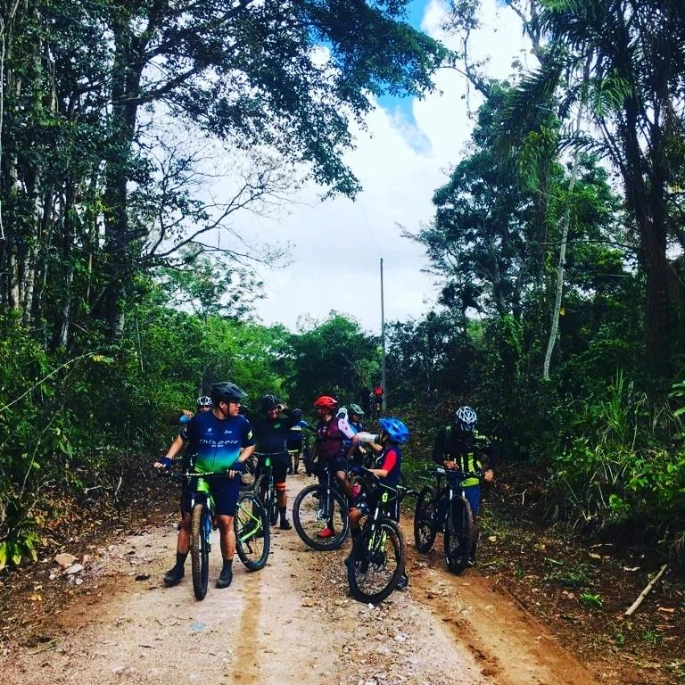

Quiénes Somos
Nuestra Historia y Orígenes
Los Pollos del West nacieron de la pasión compartida por el ciclismo y la exploración. Todo comenzó en un pequeño taller de bicicletas, donde un grupo de amigos decidió formar un equipo único y dedicado a la aventura en dos ruedas. A lo largo de los años, hemos crecido y evolucionado, pero nuestra esencia sigue siendo la misma: amantes de la bicicleta y amigos.
Valores que nos Definen
En Los Pollos del West, creemos en la amistad, el respeto mutuo y la camaradería. Nos esforzamos por crear un espacio inclusivo donde ciclistas de todas las edades y niveles de habilidad se sientan bienvenidos. Nuestro objetivo es promover la pasión por el ciclismo, el trabajo en equipo y el respeto por la naturaleza a través de nuestras actividades y eventos.